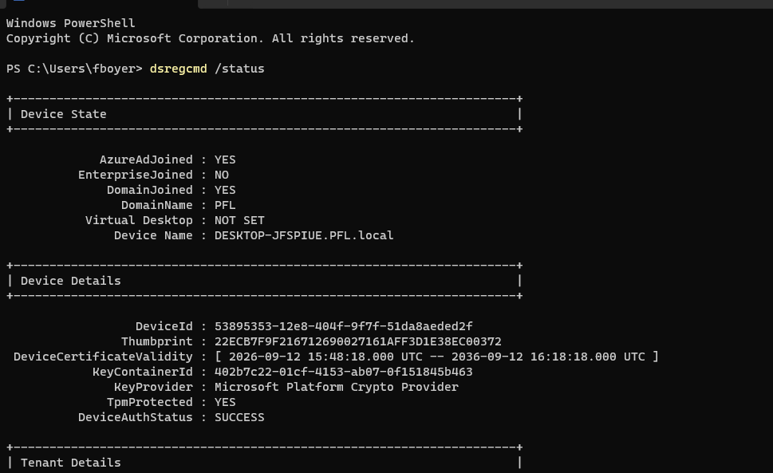
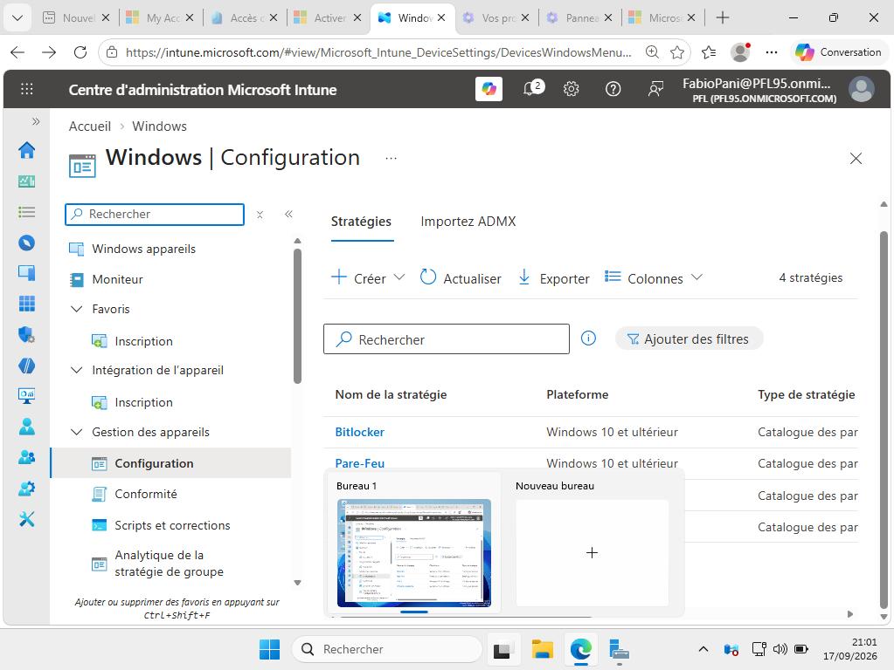
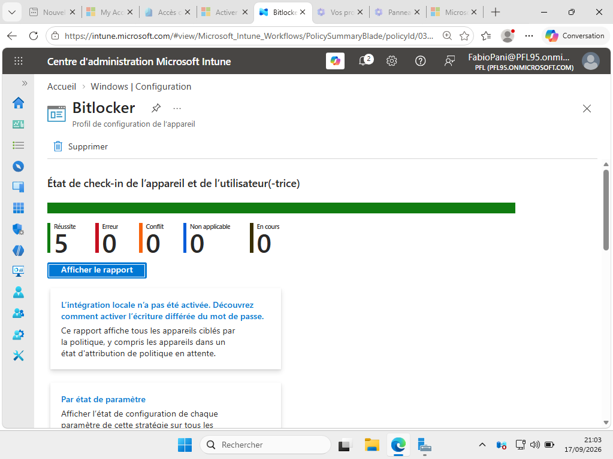
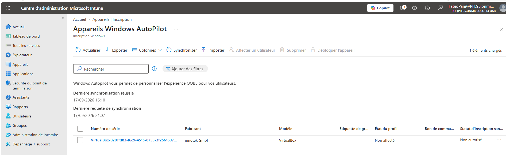
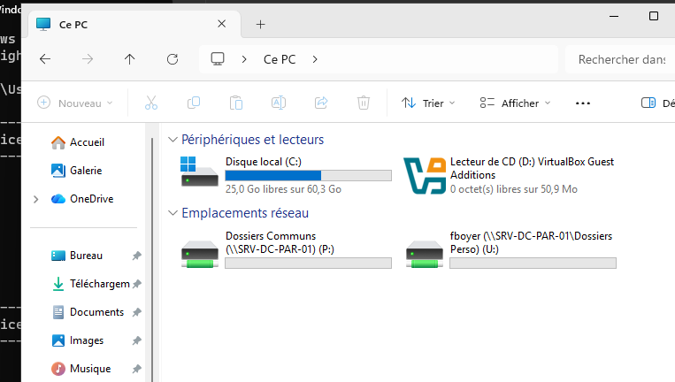
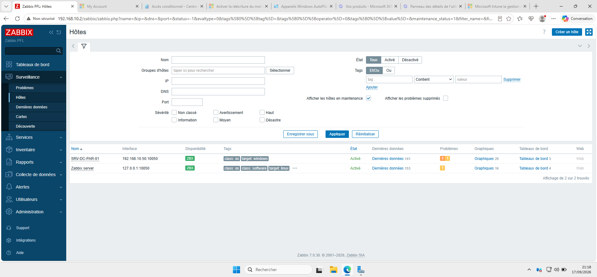

Construction d'un environnement d'entreprise hybride en homelab : un domaine Active Directory synchronisé vers Entra ID, l'inscription et la gestion des appareils sous Intune, le provisioning zero-touch avec Autopilot, la distribution de ressources par GPO, et la supervision de l'infrastructure avec Zabbix. L'objectif : reproduire les flux de travail réels d'un environnement IT d'entreprise, au-delà des raccourcis de labo.
Objet SCP créé via l'assistant Entra Connect, suffixe UPN alternatif PFL95.onmicrosoft.com ajouté pour éviter les échecs d'authentification PRT. Join validé de bout en bout sur un poste de test (dsregcmd /status : AzureAdJoined + DomainJoined + DeviceAuthStatus SUCCESS).
Déploiement de policies Settings Catalog : blocage du changement de fond d'écran, chiffrement BitLocker en XTS-AES 256. Rapport de conformité vérifié (5 appareils en réussite, 0 erreur).
Hardware hash collecté via Get-WindowsAutopilotInfo et importé dans Intune. Appareil visible dans la liste Windows Autopilot, synchronisation confirmée.
Lecteurs réseau mappés par stratégie de groupe sur l'OU Utilisateurs : P: pour les dossiers communs, U: pour les dossiers personnels (\\SRV-DC-PAR-01\Utilisateurs\%username%).
Zabbix 7.0 LTS déployé sur Ubuntu 24.04 (MySQL + Apache). Le contrôleur de domaine est monitoré via le template "Windows by Zabbix agent" avec un badge de disponibilité vert.






@PFL.local, non routable pour l'authentification cloud. Résolu en ajoutant PFL95.onmicrosoft.com comme suffixe UPN alternatif dans AD Domains and Trusts, mise à jour via Set-ADUser, puis synchronisation delta.Get-WindowsAutopilotInfo est aussi en UTF-16 LE par défaut, à réencoder en ASCII avant import dans Intune.